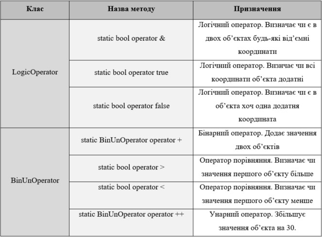
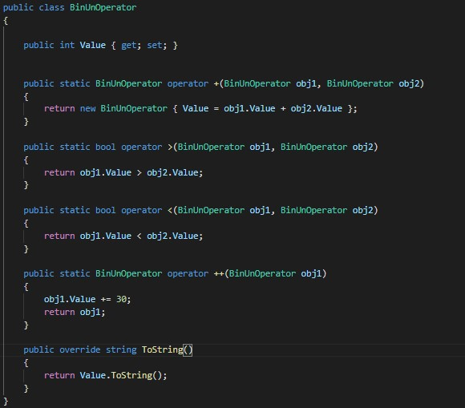
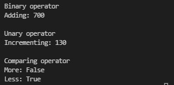
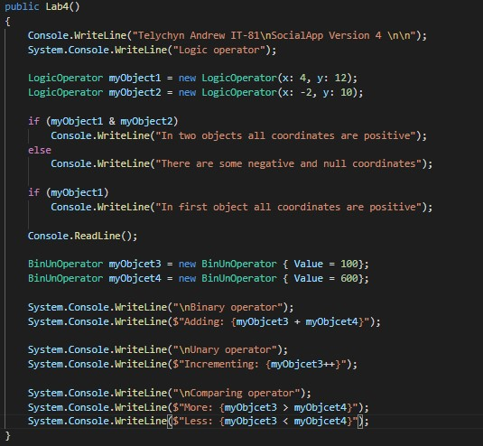
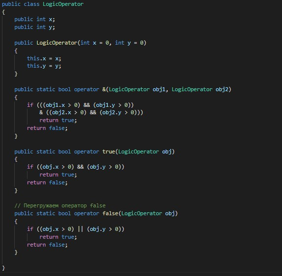
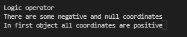

Тема: ПЕРЕВАНТАЖЕННЯ УНАРНИХ, БІНАРНИХ, ЛОГІЧНИХ ОПЕРАТОРІВ, ОПЕРАТОРІВ ПОРІВНЯННЯ
Мета: Придбати практичні навички роботи реалізації методів перевантаження унарних, бінарних, логічних операторів, операторів порівняння.
- Постановка задачі:
- 1. Доповнити програмну реалізацію класів методами для перевантаження унарних, бінарних, логічних операторів, операторів порівняння.
- 2. Протестувати програму. Зробити висновки.
Класи та методи перевантаження операторів
Місце розташування проекту: посилання.
Середовище розробки: в ході реалізації проекту в основому використовуються дві програми - Visual Studio 2019 та Visual Studio Code.
Діаграма класів

Програмний код класів з перевантаженням унарних операторів
Оскільки в мене в проекті не існує місця, де вдало можна помістити подібне перевантаження оператора, то я рішив створити тимчасові класи для даної лабораторної роботи
Код класу
Вивід
Використання
Програмний код класів з перевантаженням бінарних операторів
Оскільки в мене в проекті не існує місця, де вдало можна помістити подібне перевантаження оператора, то я рішив створити тимчасові класи для даної лабораторної роботи
Код класу
Вивід
Використання
Програмний код класів з перевантаженням логічних операторів та операторів порівняння
Оскільки в мене в проекті не існує місця, де вдало можна помістити подібне перевантаження оператора, то я рішив створити тимчасові класи для даної лабораторної роботи
Код класу
Вивід
Використання
Файлова структура проекту

Висновок
В ході виконання даної лабораторної роботи я закріпив свої знання та навички в перевантаженні операторів різних типів, таких як: логічних, унарних, бінарних, порівняння. Перевантаження подібного типу може бути корисним, коли ви хочете добавити певну нову логічу чи функціонал вашому класі, для того, щоб розширити можливості вашої програми. Логічні оператори - це оператори типу "&" та "!", вони працюють з булевими типами. Бінарні оператори - це оператори, що для виконання певної дії використовують два значення, унарні - це ті, що лише одне. Оператори порівняння використовують для порівняння об'єктів одного класу певним особливим шляхом.